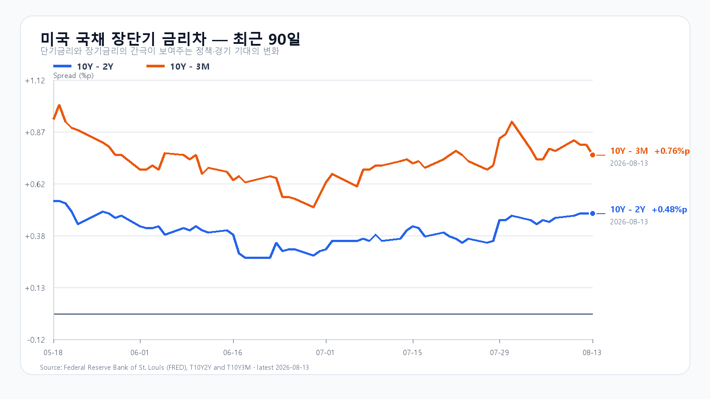
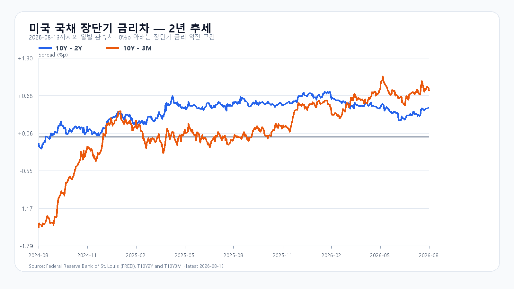

오늘의 한 문장
PPI 둔화와 Micron 강세는 반도체에 우호적입니다. 다만 전날 한국장 상승과 이를 후행 반영한 EWY를 다시 더할 수는 없습니다. KOSPI 6,895.63 돌파 뒤 외국인 현물 매수가 붙어야 상승의 세 번째 날이 열립니다.
이틀 급등 뒤에는 총액보다 매수 속도를 본다
KOSPI는 6,773.92로 출발해 6,895.63까지 오른 뒤 6,813.34로 마감했습니다. 외국인은 KOSPI 현물을 2조1,102억원, 기관은 6,834억원 순매수했고 개인은 2조7,410억원 순매도했습니다. 삼성전자는 4.89%, SK하이닉스는 5.92% 올랐습니다.
전날 전망은 강세 방향을 맞혔지만 장중 고점이 예상 경로 상단을 넘었습니다. 반도체 방향보다 국내 외국인 매수의 크기를 작게 본 결과입니다. 오늘은 전일 순매수 총액을 그대로 연장하지 않고 개장 30분과 60분의 매수 속도를 확인합니다.
| 항목 | 확인값 | 오늘 기준 |
|---|---|---|
| KOSPI | 6,813.34 · +3.56% | 6,748 방어 · 6,895.63 돌파 |
| KODEX 레버리지 | 107,975원 · +7.65% | 106,415원 방어 · 111,180원 돌파 |
| 외국인·기관 현물 | +21,102억원 · +6,834억원 | 장 초반 매수 속도 유지 |
| 삼성전자·SK하이닉스 NXT | 276,500원 · 1,688,000원 | 정규장 시초가 뒤 상승분 유지 |
| 달러/원 | 1,420.20원 | 1,420원대 방향 |
PPI 안도 속에서도 반도체는 갈렸다
미국 7월 생산자물가지수 최종수요는 전월 대비 오르지 않았고 전년 대비 4.7% 상승했습니다. 서비스는 0.2% 올랐지만 상품은 0.7% 내렸습니다. 신규 실업수당도 20만9천건으로 전주보다 9천건 늘었습니다. 두 수치는 국채금리를 낮추며 성장주 부담을 덜었습니다.
Nasdaq은 0.81%, SOXX는 0.76%, SMH는 0.73% 올랐습니다. Nvidia는 0.54%, Broadcom은 0.43%, Micron은 4.23% 상승했고 AMD는 보합권이었습니다. Micron은 시간외에도 정규장보다 약 1.2% 높았습니다.
모든 반도체 종목이 강했던 것은 아닙니다. Applied Materials는 정규장에서 2.48% 내린 뒤 시간외 508.48달러까지 밀렸습니다. AI 설비투자가 늘어도 이미 높아진 기대를 넘지 못한 장비주는 흔들릴 수 있습니다. 반면 Sandisk는 Investor Day 당일 13.67% 올랐습니다. 메모리와 스토리지 안에서도 제품과 기대치에 따라 주가가 갈렸습니다.
08:23 KST NXT 프리마켓에서 삼성전자는 276,500원, SK하이닉스는 1,688,000원이었습니다. 전일 종가 대비 각각 +3.17%, +5.96% 높았습니다. 이 가격이 정규장 시초가 뒤에도 유지되는지가 첫 시험입니다.
DRAM 현물 강세는 이어졌다
TrendForce의 8월 13일 공개치에서 DDR5 16Gb 4800/5600 현물 평균은 52.700달러로 0.38%, DDR4 16Gb 3200은 87.720달러로 0.42% 올랐습니다. 8월 3일 공개된 DDR5 32GB RDIMM은 1,565달러로 1.29% 상승했습니다.
최근 NAND 공개치도 강했습니다. 다만 낸드 수치는 8월 3일 값이므로 오늘 새로 생긴 재료처럼 다루지 않습니다. 실물 가격은 삼성전자와 SK하이닉스의 중기 이익을 받치지만, 오늘 주가는 이틀 급등 뒤 남은 외국인 매수 여력이 먼저 정합니다.
금리는 내렸고 유가도 숨을 골랐다
미 재무부 8월 13일 확정치에서 3개월물은 3.87%, 2년물은 4.15%, 10년물은 4.63%였습니다. 2년물과 10년물은 전일보다 각각 5bp 내렸습니다. 10년-2년 금리차는 +0.48%포인트, 10년-3개월 금리차는 +0.76%포인트입니다.
원/달러는 07:49 KST 1,420.20원이었고 Nasdaq100 선물은 08:14 KST +0.10%였습니다. WTI는 81.15달러, 브렌트유는 86.93달러였습니다. 물가와 금리, 유가는 전반적으로 우호적이지만 원/달러 1,420원대는 외국인 수급의 상단을 제약할 수 있습니다.


오늘 밤에는 소매판매가 금리 경로를 다시 묻는다
| 시각 | 이벤트 | 확인할 것 |
|---|---|---|
| 8월 14일 21:30 | 미국 7월 소매판매 | 소비 강도·국채금리·달러 |
| 8월 18일 22:15 | 미국 7월 산업생산 | 제조업·설비 가동률 |
소매판매가 강하면 경기 우려는 줄지만 국채금리와 달러가 되오를 수 있습니다. 약하면 금리에는 우호적이어도 경기민감주의 이익 기대가 낮아질 수 있습니다. 오늘 한국장에서는 발표 전 포지션 조정만 반영됩니다.
오늘의 시나리오와 확인 기준
전일 고점 6,895.63을 오가며 이틀 급등분의 차익실현을 소화합니다.
메모리주가 장전 상승분을 지키고 외국인 현물 매수가 함께 늘어나는 경우입니다.
메모리주가 갭상승분을 반납하고 외국인이 현물 순매도로 돌아서는 경우입니다.
KODEX 레버리지는 106,415원 방어, 107,975원 유지, 111,180원 돌파를 차례로 봅니다. 111,180원을 넘은 뒤 KOSPI 6,895.63과 외국인 수급이 동행하면 115,000원 구간이 열립니다.
오늘 판단은 공격 25점 · 관망 55점 · 방어 20점입니다.
자료 기준
한국 시세와 수급은 Naver Finance, 미국 PPI는 미국 노동통계국, 실업수당은 미국 노동부, 국채 금리는 미 재무부 자료입니다. 미국 시장은 AP와 Nasdaq·Yahoo Finance, 메모리 가격은 TrendForce, 소매판매 일정은 미국 인구조사국을 확인했습니다.